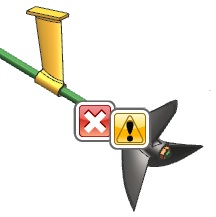
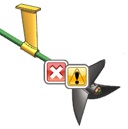

运行 Check-Mate 测试
-
在设置测试对话框中，确保选定的测试列表中包含下列列表中所示的测试。
选定的测试
检查组件引用集
面 — 锐刺/切口
对象 — 微小的 -
点击执行 Check-Mate 测试
 。
。

您图形窗口中的显示可能由于标签或者几何体的遮挡而与示意图有所不同。
-
关闭设置测试对话框。
在设置测试对话框中，确保选定的测试列表中包含下列列表中所示的测试。
|
选定的测试 |
|
检查组件引用集 |
点击执行 Check-Mate 测试  。
。

您图形窗口中的显示可能由于标签或者几何体的遮挡而与示意图有所不同。
关闭设置测试对话框。